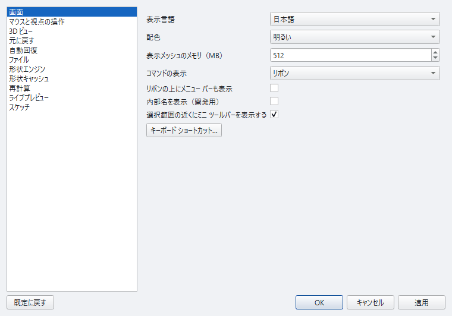
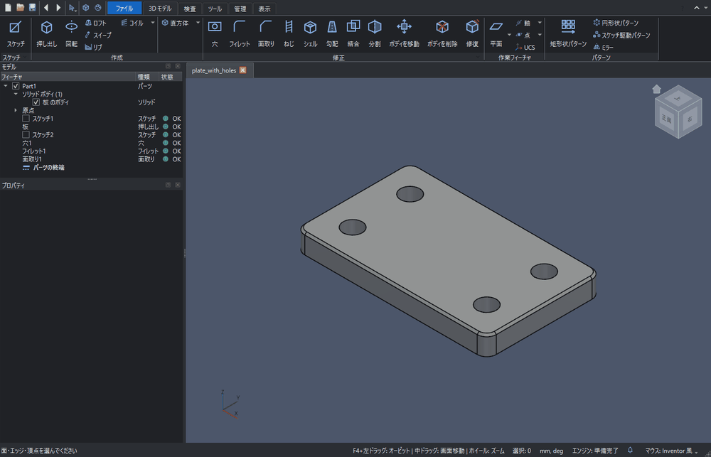
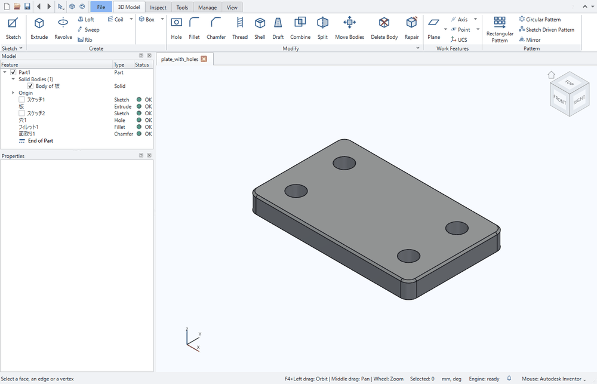
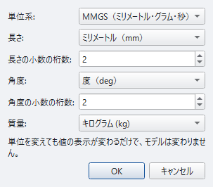
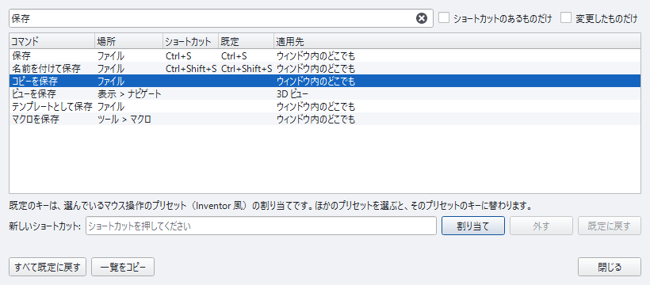
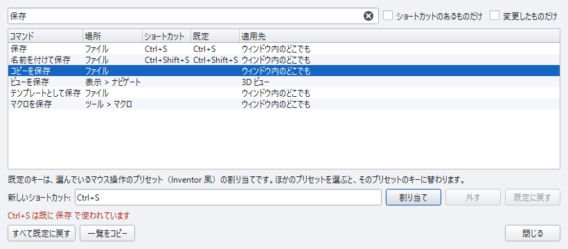
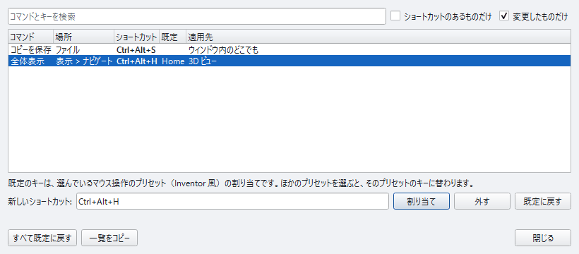
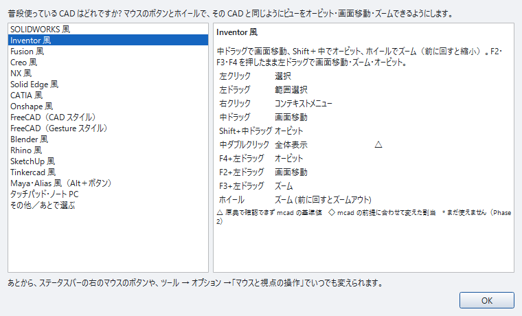

第 27 章
カスタマイズ
この章では、mcad を自分の使い方に合わせる設定を説明します。オプションの画面の見方、配色（ライト・ダーク）、表示言語、ショートカットキーの変更、マウス操作のプリセット、画面の整え方、起動のときの引数を取り上げます。
27.1 オプション
アプリケーション全体の設定は、［オプション］のダイアログにまとまっています。設定はドキュメントではなく、この PC の mcad に保存されます。
リボンの［ツール］タブ → ［オプション］パネル → ［オプション］をクリックします。左の一覧からページを選ぶと、右に設定の欄が出ます。

図 27-1 ［オプション］の［画面］ページ。左の一覧がページ、右が設定の欄です。 値を変えて、［OK］（保存して閉じる）か［適用］（保存して開いたまま）を押します。［キャンセル］は何も保存しません。
今のページの欄を全部、初期値に戻すときは、［既定に戻す］を押してから、［OK］か［適用］を押します。ほかのページの欄は変わりません。

変更がすぐに効く設定と、mcad を起動し直したあとで効く設定があります。起動し直しが要る設定を変えて保存すると、「一部の変更は mcad を再起動した後に有効になります」と知らせが出ます。範囲を外れた値や読めない値は、欄の横に赤い文で理由が出て、保存されません。
| ページ | 項目 | 内容（既定値） | 反映 |
|---|---|---|---|
| ［画面］ | ［表示言語］ | ［日本語］か［English］（表示言語） | すぐ |
| ［配色］ | ［明るい］か［暗い］（配色） | すぐ | |
| ［表示メッシュのメモリ（MB）］ | ビューに出すメッシュに使うメモリの上限（512） | 再起動 | |
| ［コマンドの表示］ | ［リボン］（Inventor と同じタブとパネル）か［ツールバー］（以前の版のメニュー バーとツールバー） | 再起動 | |
| ［リボンの上にメニュー バーも表示］ | オフ。メニュー バーには、ファイルとヘルプのコマンドと［最近使ったドキュメント］が入ります | 再起動 | |
| ［内部名を表示（開発用）］ | オフ。入れると、選んだ面・エッジ・頂点の内部名とシグネチャが、プロパティ パネルに出ます（不具合を報告するときに使います） | すぐ | |
| ［選択範囲の近くにミニ ツールバーを表示する］ | オン。切ると、選択の近くの小さなツールバーが出なくなります | すぐ | |
| ［スケッチの入力ウィンドウをカーソルに付けて動かす］ | オフ。オフのときは、作図・編集ツールの入力ウィンドウが、ビューの左上（ドラッグで動かした場所）に止まっていて、［確定］・［終了］などのボタンがあります（ツールによって変わります）。入れると、前の形（Inventor の動的入力のように、カーソルに付いて動き、ボタンの代わりに Enter・Esc の案内が出ます）になります（第 4 章） | すぐ | |
| ［3D ビュー］ | ［表示の品質］ | 曲面を分割する細かさ（［標準］。［粗い］は速く、［細かい］はなめらか） | すぐ |
| ［アンチエイリアスのサンプル数］ | ビューの線のなめらかさ（8。0 でなし） | 再起動 | |
| ［ビューの切り替えの時間（ms）］ | 標準ビューなどへの切り替えのアニメーションの時間（200。0 でなし） | すぐ | |
| ［背景］ | ［グラデーション］か［1 色］ | すぐ | |
| ［元に戻す］ | ［元に戻せる回数］ | 戻せる操作の数（200） | あとで開くドキュメントから |
| ［自動回復］ | ［自動回復の間隔（秒）］ | 回復用の写しを書く間隔（120。0 で書きません） | すぐ |
| ［ドキュメントごとに保持する回復用の写しの数］ | 古い版をいくつ残すか（3） | すぐ | |
| ［ファイル］ | 同梱キャッシュ・外部の格納先・バックアップ・ロック・テンプレートなど | 第 13 章にあります | すぐ |
| ［形状エンジン］ | ［ワーカーのプロセス］・［ワーカーごとのメモリ上限（MB）］・［取り込みを打ち切る時間（秒）］など | 形を計算するプロセスの設定です（第 29 章） | 再起動を含む |
| ［形状キャッシュ］ | ［ディスクキャッシュ（GB）］など | 計算結果の保存の設定です（4 GB） | すぐ |
| ［再計算］ | ［フィーチャが失敗したとき］ | ［続ける］か［止める］（続ける） | すぐ |
| ［ライブプレビュー］ | ［ライブプレビュー］ | 値を入れている間の結果の表示（オン） | 再起動 |
| ［スケッチ］ | スナップの半径・拘束の推論・表示する記号など | 第 4 章のスケッチの設定です | すぐ |
［マウスと視点の操作］のページは、マウス操作のプリセットの節にあります。
27.2 配色（ライト・ダーク）
リボンの［ツール］タブ → ［オプション］パネル → ［オプション］を開き、［画面］ページの［配色］を［暗い］にします。
［OK］を押します。起動し直さずに、ウィンドウ・アイコン・3D ビューの背景と色が暗い配色に替わります。

図 27-2 暗い配色。ブラウザ・リボン・ビューの全体が替わります。

3D ビューの背景は、［3D ビュー］ページの［背景］で、配色の 2 色のグラデーションと 1 色から選べます。起動のときに決めるには --theme dark（明るい配色は --theme light）を付けます（起動の引数）。
27.3 表示言語
メニュー・ダイアログ・知らせの言語は、日本語と英語から選べます。
リボンの［ツール］タブ → ［オプション］パネル → ［オプション］を開き、［画面］ページの［表示言語］を［English］にして、［OK］を押します。
再起動しなくても、リボン・ブラウザ・ステータスバー・ツールチップが英語に替わります。

図 27-3 英語の表示にしたウィンドウ。リボンのタブとパネルの名前・ボタン、ブラウザ、ステータスバーが英語になります。

ドキュメントの中の名前（フィーチャの名前など）は、書いた言語のままです。起動のときに決めるには --language en（日本語は --language ja）を付けます。
27.4 単位と精度
長さと角度の表示の単位と小数の桁数は、ドキュメントごとに決めます。オプションではなく、ドキュメントの設定です。
リボンの［ツール］タブ → ［オプション］パネル → ［単位と精度］をクリックします（ステータスバーの単位の表示（
mm, deg）を押しても開きます）。［単位系］で［MMGS（ミリメートル・グラム・秒）］などを選ぶか、［長さ］・［角度］・［質量］と、［長さの小数の桁数］・［角度の小数の桁数］を決めて、［OK］を押します。

図 27-4 単位と精度。単位を変えても、値の表示が変わるだけで、モデルの形は変わりません。

この変更はCtrl+Zで戻せます。数値の欄に単位のない数値を入れると、このドキュメントの単位として扱います（第 10 章）。
27.5 ショートカットキーを変える
コマンドのショートカットキーは、一覧で確かめて、自分のキーに替えられます。
リボンの［ツール］タブ → ［オプション］パネル → ［キーボード ショートカット］をクリックします（［オプション］の［画面］ページの［キーボード ショートカット］でも開きます）。全コマンドの［コマンド］・［場所］・［ショートカット］・［既定］・［適用先］が並びます。［場所］は、コマンドがあるリボンのタブとパネル（［ツール］ > ［マクロ］ など）か、メニューの名前です。
上の検索欄に、コマンドの名前（日本語も英語も）・場所・キーの一部を入れて絞ります。［ショートカットのあるものだけ］と［変更したものだけ］でも絞れます。

図 27-5 ショートカットの一覧。［保存］で絞った状態で、［コピーを保存］にはキーがありません。 コマンドの行を選び、［新しいショートカット］の欄をクリックして、割り当てたいキーを押します。［割り当て］を押すと、すぐに効きます。
キーを外すときは［外す］、変えたキーを元に戻すときは［既定に戻す］を押します。全部を戻すには［すべて既定に戻す］を押し、確認で［はい］を選びます。［一覧をコピー］は、見えている行をタブ区切りの文字にして、クリップボードに入れます。

衝突の検出
すでに別のコマンドが使っているキーを入れると、割り当てる前に、赤い文で知らせます。


Ctrl+S は［保存］が使っています。そのまま［割り当て］を押すと、「…は既に…で使われています。そちらから外して、ここで使いますか?」と確認します。［はい］を選ぶと、相手のキーを外してこちらに付けます。［いいえ］は何も変えません（既定）。


押している間にパン・ズーム・オービットをするキー（［Inventor 風］では F2〜F4）は、割り当てられません。「…は、押している間にパン・ズーム・オービットを行うマウス設定で使われています。別のキーを選んでください」と断られます。
複数のキーを続けて押す組み合わせ（
V, Fなど）は使えません。修飾キー（Ctrl・Shift・Alt）だけの割り当ても、できません。文字・数字・ファンクションキーのショートカットは、ウィンドウのどこでも効きます。文字を入れる欄・コンボボックス・数値の欄では、欄に入力されます。
27.6 マウス操作のプリセット
3D ビューのオービット・画面移動・ズームのマウス操作は、16 種類のプリセットから選びます。初めて起動すると、普段使っている CAD を尋ねます。


後から替えるには、ステータスバーの右端のマウスのボタンか、リボンの［ツール］タブ → ［オプション］パネル → ［オプション］の［マウスと視点の操作］ページを使います（第 2 章）。起動のときに --preset inventor のように ID を付けて決めることもできます。

［すべてのプリセットに共通］の欄で、ホイールの向き・ズームの中心・オービットの方式・速さなどを、プリセットを変えずに上書きできます。［（プリセットのまま）］を選ぶと上書きしません。
［タッチパッドの判定］は、ノート PC のタッチパッドを、マウスのホイールと見分ける設定です。［自動で判定する］で足りないときに替えます。
［複製して編集］は、選んだプリセットの差分だけを書くファイルを、設定のフォルダの
navigationに作り、フォルダを開きます。ファイルをテキスト エディタで直して［再読み込み］を押すと、自分のプリセットとして一覧に出ます。［インポート］・［エクスポート］で、ファイルをやり取りできます。
27.7 画面の整え方
リボンかツールバーか: ［画面］ページの［コマンドの表示］で選びます。［ツールバー］は、以前の版のメニュー バーと 2 段のツールバーです。変えたあとは、mcad を起動し直します。
メニュー バー: ［リボンの上にメニュー バーも表示］を入れると、リボンの上にメニュー バーが出ます。リボンのどのパネルにもないコマンドと、［最近使ったドキュメント］も、ここにあります。
全画面表示: リボンの［表示］タブ → ［ウィンドウ］パネル → ［全画面表示］（F11）で、ウィンドウを画面いっぱいにします。もう一度押すと戻ります。
ドック: 左のブラウザとプロパティのドックは、幅と高さをドラッグで変えられます。リボンの［表示］タブ → ［ウィンドウ］パネル → ［変更履歴］・リボンの［表示］タブ → ［ウィンドウ］パネル → ［ログと通知］のドックは、リボンの［表示］タブの［ウィンドウ］パネルで出し入れします。ウィンドウの大きさ・ドックの配置・リボンの最小化の状態は、閉じるときに保存され、次の起動で戻ります。
ミニ ツールバー: 出したくないときは、［選択範囲の近くにミニ ツールバーを表示する］を切ります。
27.8 起動の引数と設定の場所
起動のコマンドに引数を付けると、設定を一時的に替えて起動できます。配布版は mcad.exe に同じ引数を渡します。
python -m mcad --open part.mcad --language en --theme dark| 引数 | 動作 |
|---|---|
--open ファイル | ドキュメントを開いて起動します。繰り返すと複数を開きます。開けないときは、知らせに理由が出ます |
--language ja|en | 表示言語をこの起動だけ替えます（保存はしません） |
--theme light|dark | 配色をこの起動だけ替えます |
--preset ID | マウス操作のプリセット（inventor など）を設定に保存します。ID が違うと、案内を出して終了します |
--data-dir フォルダ | 設定・ログ・キャッシュ・回復用の写しを、そのフォルダの下に置きます。試すときや、持ち歩く環境で使います |
--settings ファイル | 設定を、JSON のファイルに保存します（{"ui.theme": "dark"} の形）。読めない設定ファイルは別名で退避して、既定の設定で起動し、知らせます |
--recover ask|open|overwrite|discard|keep | 前回の異常終了で残った写しの扱いを、尋ねずに決めます（第 13 章）。ask は復旧のダイアログ、open は未保存のドキュメントとして開く、overwrite は元のファイルに上書き（前の版は .bak）、discard は捨てる、keep は次の起動まで残す |
--plugin・--entry-point-plugins | 外部のプラグインを読み込みます（第 28 章） |
--no-spare | 予備のワーカーを起動しません。メモリは減りますが、止まったあとの復帰が遅くなります |
--skip-gl-check | 起動のときの OpenGL の検査を省きます（第 29 章） |
--no-dialogs | 起動のときの誤りを、ダイアログでなく標準エラーに出します |
--demo | 見本の部品を作って表示します |
--log-input | 3D ビューのホイール・ジェスチャ・修飾キーの動きをログに書きます（タッチパッドの確認用） |
--hidden・--quit-after・--report・--screenshot と、--section・--view・--preview などは、開発と画面の写真を撮る試験用です。通常は使いません。引数の一覧は python -m mcad --help で出ます（英語）。
設定とログの場所
引数なしで起動したときのフォルダは次のとおりです。%APPDATA% は、Windows の「Roaming」のユーザー フォルダです。
| 場所 | 中身 |
|---|---|
%APPDATA%\mcad\ | 設定 mcad.ini、ウィンドウの配置 window.ini、ショートカット shortcuts.json、コンソールの履歴 console_history.txt、マウスのプリセット navigation\、テンプレート templates\ |
%LOCALAPPDATA%\mcad\logs\ | ログ（gui.log と、形状エンジンの worker-…log） |
%LOCALAPPDATA%\mcad\cache\ | 計算結果のディスクキャッシュ |
%LOCALAPPDATA%\mcad\sessions\ | 起動ごとの作業フォルダ。自動回復の写しとロックが入ります |
--data-dir C:\mcad_data を付けると、設定は C:\mcad_data\config\、ログ・キャッシュ・回復用の写しは C:\mcad_data\local\ の下に作られます。